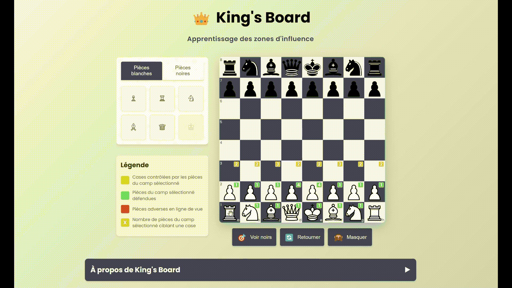
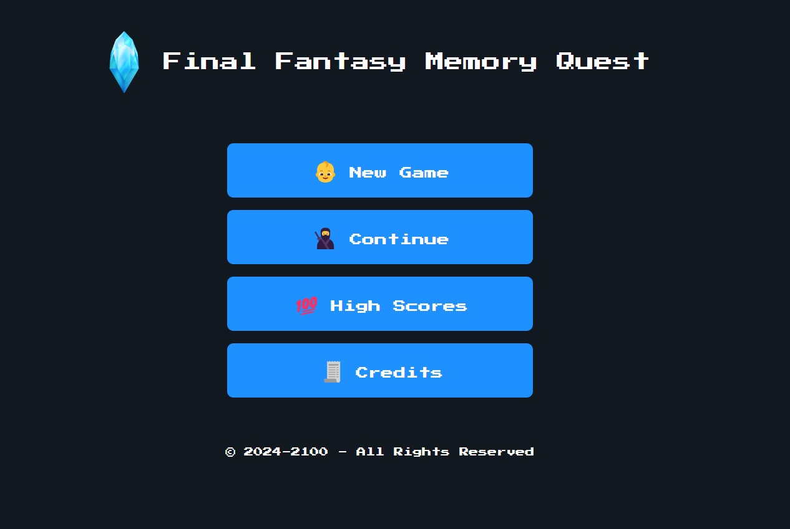
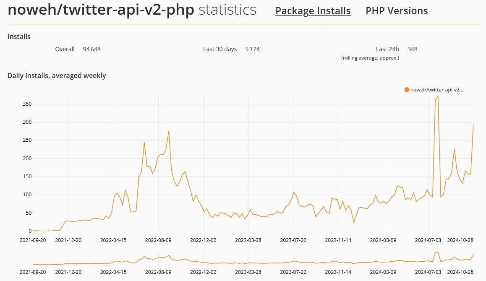

Projects
King's Board
King's Board is an educational tool designed to teach influence zones in chess. Place pieces on the board to instantly visualize their control and interactions through color-coded highlights.
L'Eco-memo
L'Eco-Memo is a memory game designed to showcase different products created during workshops with Eco-Actitude.

Flappy-man
Flappy-man is a fun and challenging game inspired by the classic Flappy Bird, entirely built in PHP and designed to run in a command-line terminal.

Final Fantasy Memory Quest
Another memory game, for the fun of it.
PHPong
A Pong game in PHP With Laravel Livewire and AlpineJS.

Twitter API V2 for PHP
A PHP package which provides an easy and fast access to Twitter REST API for Version 2 endpoints.
Articles on Medium
Discover my technical articles on Medium, where I share insights, tips, and deep dives into PHP development and backend engineering.
PORTFOLIO - LOOOP
Experiencing the PORTFOlio...
PORTFOLIO... LoOp LOOP......
Every project, every line, every move... Loop
LOOP...,
L0OPS...